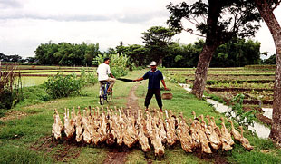
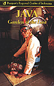
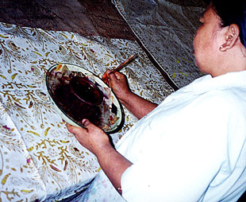
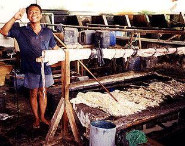
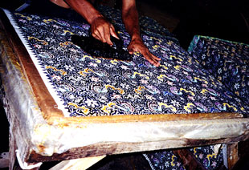
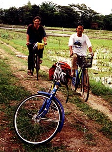
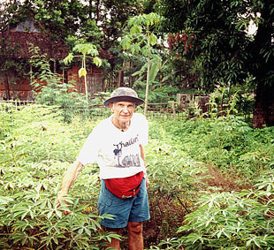
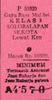
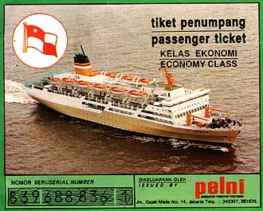

Sent: 15 Dec 1999 02:44 GMT
web version, with
|
 |
| Prior Trav-E-Log: UnbeleavMix | Java is ... temples, ricefields, ducks, .... |
(Note:) This is the 13th in a series of Trav-E-Logs sent while traveling in S.E.Asia between Oct 16, 1999 and Jan 22, 2000.Hi folks,
After arriving in Yogyakarta (say Jogja) tired, dirty, and with swollen feet, I was further disappointed when finding the "new" hotel I was looking for had already gone out of business. Stayed at the place across the path, even though it was a little too dirty for my liking. But I needed a bath, food, and rest.
Actually, I soon remembered how much I enjoyed this city during my last visit. Yogya is still a nice place to visit, being the traditional cultural center of Jawa. I looked at a lot of batik, batik art, and took several long walks to exercise my feet. Because it is now the rainy season, none of the theaters nor puppet performances coincided with my visit. Walked down to the batik factory where I had made many purchases 7 years ago, but found they were closed in observance of Ramadan. That walk was through the center of the old walled city, and past traditional performance stages and schools still in operation. As is the rule when a tourist walks in Indonesia, someone will "join" your walk, ostensibly to practice English, which always ends in disappointment when you refuse to follow him to a shop where he would receive a commission. One elderly gentleman said he needed money to repair his bike (it was obviously falling apart), so he could go to practice for his upcoming tour of Washington and New York. Once in Sumatra, a bus passenger wanted me to buy him air fair to the USA. Another wanted me to sponsor him through an American University. Here in Yogya, another told me I was very lucky because he would take me to a big Exhibition of Art from all over SE Asia, and it was today only. "What, you don't like art?" was his concluding remark, as he knew that I saw through the "Yogya Ploy", as defined in the Lonely Planet guidebook. Generally, the only ones you can trust are those that want your signature on a school notepad. In these cases, the students are satisfied with my email address.
So it was indeed a pleasure to meet a couple in Yogya that just wanted to talk. They had traveled extensively, all over the world, and had just returned. He was in import/export, and a very interesting conversationalist. We exchanged stories, and he advised me on things to look for when I get to Sulawesi. I hope my observations in Krabi will be helpful to him. His wife, from Malaysia, preferred to talk through him to me, but seemed to fully understand our conversation. They make a fine couple, and I certainly hope he sends me e-mail as promised. We agreed to meet at the same street stall the following evening, and sure enough, we both kept our promise. Again, we all ordered the specialty of Yogya, Nasi Gudeg, which contains chicken, egg, a gelatin mixture, and shredded jackfruit cooked in coconut milk, all served over white rice. He asked me how I happened to select this place to eat, and I told him I walked up and down the street and selected the restaurant with the most local customers. This rarely fails me, when I know nothing about a town.
Continued my journey with a short one-hour, one way trip to Solo, early the next morning by train. Only had to wake up at 5:30 - plenty of sleep, now that my feet are back to normal. Quickly arranged a bike trip of Solo's cottage industries, as written up in the Lonely Planet guidebook. It was already 15 minutes after the normal 9 AM start time, and the trip requires a minimum of two guests. Found Frank, from Koln, Germany, waiting for a batik instructor. Encouraged him to call the organizer, and he found the class was canceled due to lack of students. So by 10 AM we were outfitted with bikes and on our way. . . .
The first stop was a large batik factory, where we saw about 100 employees supporting the process. Noticed that several types of cloth material were being used, and that most batik requires two or three waxing operations by hand stamping both sides of the cloth, and touching up missed areas by brush. Smaller regions of color are quickly hand-applied by brush after the wax has cooled. The chemical dyes change color when fixed in an "acid" solution of ammonium sulfate (bisulfate?). This is followed by a water rinse, then fixed in a soda ash solution to neutralize, and subsequently final rinses. Wax is removed from the cloth in a hot water bath, permitting the wax to be reclaimed for recycling. After drying, the second wax application covers all existing colors, as well as all areas to remain white in the finished product. Then the final dying, fixing, rinsing and wax removal operations produced the finished pattern, on material measuring over 1 meter wide by 2 to three meters long. Drying took place in air, hung on bamboo poles stacked two stories high under a canopy to protect from rain. Reclaimed wax was processed by a lone, young boy in a separate building, standing above the hot wax vats. OSHA would shudder to think of the consequences if he lost his footing on the very slippery surfaces. The batik tour ended at the show room, where neither of us made a purchase, as the prices seemed rather high. Little did we know this would be the cleanest place on the tour, and the last concrete floors we would see.
The next stop was a rum-making distillery that had been handed down in the family for generations. We were allowed to sample the product out of a dirty, common glass. This appears to be a one employee per shift operation. I tried to take a picture, but things were pretty bleak, so have low hopes.
We stopped at a cake and donut factory, seeing just how crude of an operation can produce pleasant tasting donuts. Bananas were peeled, sliced, and wrapped with a strip of dough. Donuts had a tiny piece of filling pushed into the ball of dough before deep-frying in a wok-shaped pan heated over a wood fire. Baking was done in a furnace that had trays on shelves, which were continually turned by a large hand wheel sticking out the end wall. The young boy turning the wheel appeared happy. The finished product was collected by hand in baskets, and delivered to women sitting on the sidewalk. They would stuff an item into a cellophane bag, and seal with an open flame from an oil lamp, while socializing with peers. Although these items sold for 500 to 1000 rupia at stores, we paid wholesale prices at the bakery -- 200 rupias a bag.
Also saw rice cakes being made, dried outside on open trays and with many flies and other insects inspecting the goods. The taste after deep-frying was quite similar to the deep-fried mochi I remember from Japan. I would characterize the lady in charge of the frying as a great-great-grandmother. The last of the food making places was a Tofu factory, with four employees. The fuel used to heat the crushed soybean was wood shavings. All factories encouraged us to sample the food products. Only at the distillery did I feel uncomfortable, as it was so dark, I could not see what I was consuming.
Of course the bronze gong factory was the most interesting site on the bike tour. Casting was an open-air operation, resulting in a pancake of desired weight, although no pours were made during our visit. The exact composition of copper and tin are a "secret", but I saw the ceramic crucible used for melting the precise weight for the desired gong. A pancake was then reheated in a bed of charcoal, pulled out with tongs by one worker who placed it partially on a slight mound of rock and dirt on the dirt floor. A second worker turned off the blower for the pit furnace, while directing the burning end of a bamboo pole to supply a little light close to where the pancake was to be struck by a third worker. After each strike with a wooden mallet, the first worker would rotate the pancake slightly. After 4 to 6 strikes, the first worker would return the partially formed workpiece to the charcoal bed for reheating, the blower was turned back on, and the mound of dirt and rock would be reshaped. This repeated sequence would take about half a minute, plus another several minutes for reheating. After a certain shape was obtained, iron mallets replaced the wood mallet, with a 3-man team swinging the mallets in rapid succession between rotations of the workpiece. The workpiece, now taking on the shape of a gong, was not heated to as high a temperature as before. But all shaping was done by hand blows on the workpiece against the dirt floor. In the only other room of the factory, gongs were "tuned" by file and hammer. The only modern tools used were electric blowers for the charcoal pit furnaces, and an electric grinder used for cleaning and "tuning" the finished gong. I asked about the large (9-inch diameter) pieces of banana stalk outside the factory, and was told it was used to protect the workers from intense heat during melting. OSHA at work.
The tour was over by 4:30, but made for a full day. We were lucky - although the day was overcast, no significant rain fell, and we had an opportunity to see a little of the countryside around several villages. Crops included rice, string beans, eggplant, papaya and a crop whose leaves reminded me of pictures of cannabis. Cleanliness was non-existent. Anywhere. Roaches, ants, mosquitoes, and flies were common. But seeing so much production from such little equipment, by happy people, reinforces my respect for the Indonesian people.
Now back at the Warung Biru homestay/restaurant that arranged the bike tour, I borrowed another bike to run up to the train station to check the latest schedule. Sure enough, to arrive in Surabaya in plenty of time to make reservations on the Pelni ship leaving for Sulawesi at 4 PM tomorrow, I had to take the train scheduled to leave Solo at 11:24 pm tonight - just over 14 hours in this lovely town. So Frank and I headed out to check some batik stores, but only found the high-priced stores open, as most normal places close from 4 to 6 PM or so during Ramadan. I was also informed that batik art is only sold in Yogya. On the way back to the restaurant, Frank showed me some of the government run handicraft areas reportedly burned out during the civil unrest last year. Back at the restaurant, I ordered another local specialty, called nasi liwet, which contains chicken and coconut milk over white rice. I am sure glad that each city has a specialty food, as I seem to enjoy them all. Shortly after 9 PM, the restaurant starts closing up, so I pay for the meal, 4 bottles of soda I had consumed, and headed over to the train station. No sleep tonight, but it certainly has been another wonderful day.
Bill